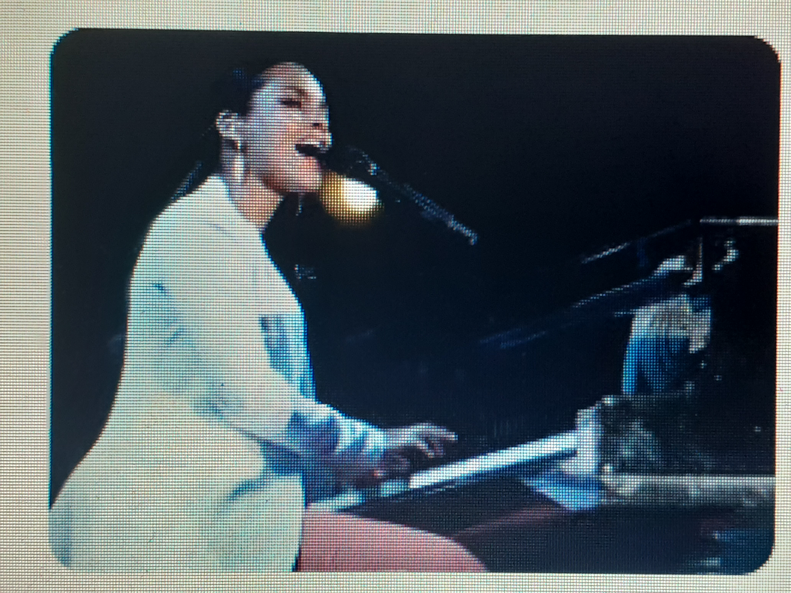

Een bekende pianiste
Alicia keys
 Alicia J. Augello-Cook is een amerikaanse pianiste die geboren is op 25 januari 1981. We kennen haar vooral als Alicia keys. Ze wordt hier pianiste genoemd, omdat deze site gaat over piano spelen. Maar ze is meer dan pianiste alleen. Ze is natuurlijk ook zangeres, liedjesschrijver, componiste, producente en actrice. Een multitalent.
Ze groeide op in haar geboorte stad New York. Op zeven jarige leeftijd kwam ze voor het eerst in aanraking met een piano. Ze leerde klassieke muziek spelen. Alicia's moeder hielp haar vooral bij het ontwikkelen van haar talenten.
Keys verwerkt de piano in veel van haar nummers, omdat ze al van jongs af aan piano speelt. Haar muziek gaat vaak over liefde, een gebroken hart en de kracht van vrouwen. Keys stijl bestaat uit soulmuziek, die wordt ondersteund door bas en geprogrammeerde beats, en ze verwerkt de klassieke piano in haar r&b-jazz en soulmuziek. Een bekende nummer waarin Keys piano speelt heet Fallin.

Keys kreeg in 2010 een zoon met haar partner Swizz Beatz, met wie ze trouwde op 31 juli 2010. In 2014 kregen ze een tweede zoon. Haar man heeft uit eerdere relaties een dochter en twee zonen.